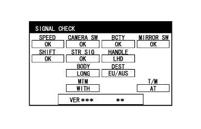

REAR VIEW MONITOR SYSTEM (w/ Side Monitor System) > DIAGNOSIS SYSTEM |
| REAR VIEW MONITOR DIAGNOSIS SYSTEM |
For rear view monitor system diagnosis, signals received by the parking assist ECU can be checked and the rear view monitor system can be calibrated, adjusted and checked using the accessory meter assembly.
| DIAGNOSIS SCREEN TRANSITION |
w/o Multi-terrain Monitor

w/ Multi-terrain Monitor

| START DIAGNOSTIC MODE |
Start the engine.
Turn on the accessory meter.
Retract the outer rear view mirrors.
Operate the light control switch within 10 seconds:
Off → Turn on → Turn off → Turn on → Turn off → Turn on → Turn off.
| FINISH DIAGNOSTIC MODE |
Method 1
Turn the engine switch off.
Method 2
Press the MODE switch of the accessory meter assembly
| SIGNAL CHECK (PARKING ASSIST ECU INPUT SIGNAL) |
Start diagnostic mode.
|  |
SIGNAL CHECK
On the SIGNAL CHECK screen, it is possible to inspect the state of signals sent to the parking assist ECU and check the settings.
| Item | Inspection Detail | Note |
| SPEED | Speed signal input | When "CHK" (red) is displayed, selecting "NEXT" will not change the display to the next screen. |
| CAMERA SW | Steering pad switch assembly (wide view front and side monitor switch) signal input | |
| BCTY | State of CAN communication with main body ECU (multiplex network body ECU) | |
| MIRROR SW | Outer rear view mirror retract signal input | |
| SHIFT | Shift signal input | |
| STR SIG | Steering angle sensor signal input | |
| HANDLE | Steering wheel position signal input | |
| BODY | Body size signal | |
| DEST | Destination information signal input | |
| MTM | Multi-terrain monitor judgment signal | |
| T/M | Transmission judgment signal |
Finish diagnostic mode.
| CALIBRATION WHEN SERVICING VEHICLE |